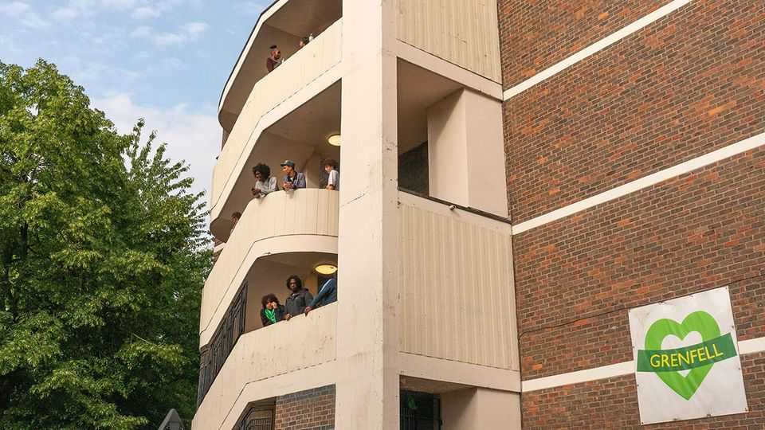
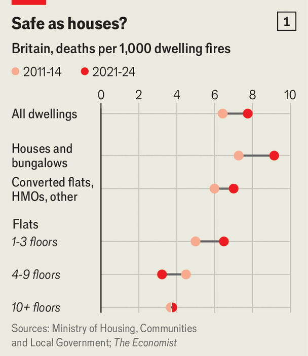
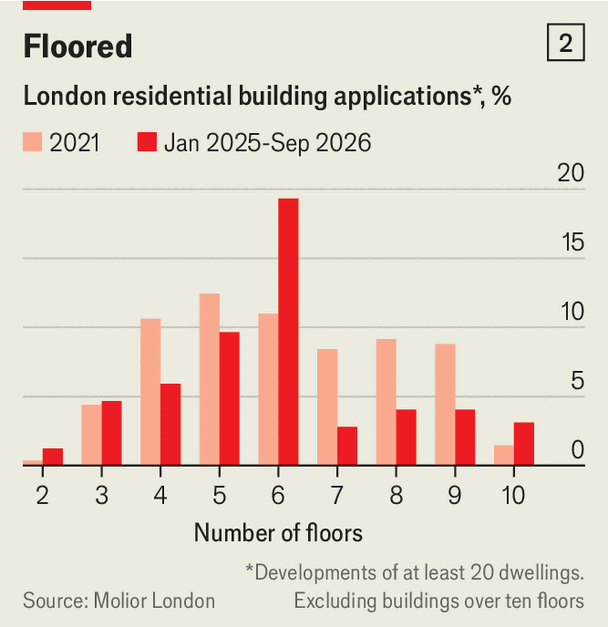

Britain implements a rule the Grenfell inquiry never recommended
A second-staircase requirement will further clog up homebuilding

Oct 1st 2026
SEVENTY-ONE people were killed by the fire that engulfed Grenfell Tower in 2017. A kitchen blaze on the fourth floor of the 24-storey building quickly became a raging inferno fuelled by the tower’s external cladding. This week the Metropolitan Police announced that it had submitted 20 files to the Crown Prosecution Service to consider charges including manslaughter, fraud and misconduct in public office against 20 companies and 54 people.
Prosecutions are not the only legacy of Grenfell. In 2025 the government promised to take action on all 61 of the recommended changes from the seven-year-long inquiry that examined the causes of the fire. Only half of them have so far gone through. Thousands of people are still living in homes with flammable cladding like Grenfell. A new rule has just come into force that was not recommended by the inquiry. It is likely to gum up homebuilding and make high-rise dwellings little safer.
From September 30th all new residential blocks at least 18 metres tall (approximately seven storeys) will require a second staircase for evacuation. The inquiry itself concluded that Grenfell Tower’s single staircase had “sufficient capacity to enable all the occupants of the building to escape within a reasonable time”. An independent review of high-rise building safety in 2018 did not recommend second staircases.

In December 2022 the then Conservative government nevertheless proposed that all new residential buildings above 30 metres would require a second staircase. Months later, in response to fire chiefs’ assertion that a second escape passage was needed in some cases, the government reduced that threshold to 18 metres. Britain now has a far stricter regime than Germany (60 metres), France (50) or Spain (28).
The fire at Grenfell arose from decades of neglect. Changes introduced since—such as banning combustible cladding, introducing sprinklers in buildings above 11 metres and a regulator that must approve tall buildings’ design before work starts—mean it should not recur. The government’s own analysis estimated that second staircases in 18- to 30-metre towers would have a one in 200,000 chance of saving a life in any given year. Overall, they were expected to provide just £9m ($12m) of benefits but impose £2.7bn of costs. Fires in apartment buildings are becoming rarer and occur less often than in houses (see chart 1).
The new rule imperils the government’s goal of building 300,000 homes a year (25% was expected to come from blocks above 18 metres). An extra stairway reduces the floor space that can be sold. Data from Molior, a consultancy, show that many builders are simply avoiding building above six storeys (see chart 2). Jack Airey of Public First, who worked for Number 10 as the second-staircase rule was being considered, recalls that “questions were asked at the time about the impact on supply, but they just weren’t properly answered.”

Developers complain that regulatory burdens have contributed to a “viability crunch”. Nick Cuff of Urban Sketch, a housing developer, says that British pension funds now prefer to invest in southern European hotels rather than complex London apartments. The country is building fewer than 200,000 homes a year. In an effort to prime the market, on September 26th Andy Burnham, the prime minister, announced a government-backed scheme that will help first-time buyers purchase new-build homes with a 2.5% deposit.
There is some welcome new oversight of building. Developers used to be able to pick their own building-control inspector and change designs during construction with little scrutiny. But since 2023 the Building Safety Regulator (BSR) has governed the design, construction and refurbishment of tall buildings. Grenfell, built in 1974, was poorly managed and external combustible cladding added in 2016 was waved through by council inspectors.
The BSR, which was beset with bottlenecks, has improved under Lord Roe, its boss since July 2025 and a former fireman who was the incident commander on the night of the Grenfell disaster. The BSR approves the refurbishment of buildings with dangerous cladding, but fixing buildings has proved painfully slow. Work has yet to begin on 38% of 2,600 buildings above 18 metres identified as at risk. Latest estimates suggest that it will cost £12bn-23bn to complete the remediation, with £3.4bn raised from a new tax on housebuilders.
Meanwhile 140,000 households are in homes that often prove difficult to insure or sell. There are 1,700 buildings in London—365 with 24/7 patrols—where residents would be told to evacuate immediately in the event of a fire. A second-staircase rule that few people thought necessary is hardly going to help.■